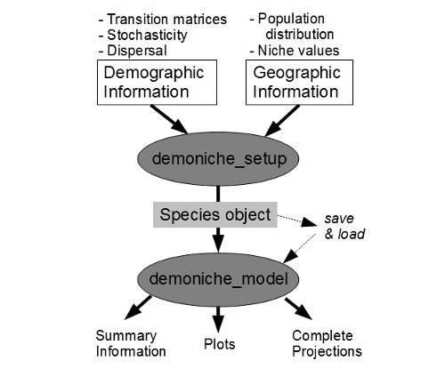

demoniche - spatial population dynamics
demoniche carries out spatially-explicit demographic modelling. The model simulates stochastic and gradual niche changes, to investigate population dynamics and persistence in space and time. demoniche offers the following features:
- Transition matrices that represent demographic responses to environmental or human impact scenarios
- Demographic and environmental stochasticity
- Temporal trends in environmental suitability of the species niche
- Long- and short-distance dispersal
demoniche is built in R and we encourage you to adapt demoniche to your and your species specific needs!
Manual
Download the updated (13th of december) manual as a pdf
Download a poster created with demoniche
demoniche was made by Hedvig Nenzén, together with David Keith and Miguel Araújo. Rebecca Swab (rebecca.swab/gmail.com) has also made substantial improvements to the model.
If you have any questions or suggestions, please contact me at hedvig.nenzen/gmail.com.

To use demoniche, first run the function 'demoniche_setup' which checks the consistency of the user-supplied information and generates an R object containing the necessary information for modelling. In the 'demoniche_model' function the user specifies if she/he wishes to include effects of the environmental changes and dispersal.
Required demographic information. demoniche uses transition matrices for species to project population sizes. This image shows one transition matrix, made by the popbio package.

Required geographic information. Demographic projections can be linked to a time-series of geographically distributed niche values that affect the species growth. The Niche values modify the elements of the transition matrix (reproduction, survival or growth) and can be any values that are thought to influence the suitability of the species' niche.
Results. Summary results in .csv format for all scenario matrices are produced.

Results. demoniche automatically creates graphs of the Expected Minimum Abundance (EMA) of each transition matrix treatment scenario. Results from all subpopulations, all years and all repetitions are available and can be modified in R or exported to other formats.

Results. Map of populations occupied by the modelled species affected by the Niche values as shown before. The intensity of the color indicates the population size in each grid cell/population. These graphs are automatically generated by the 'demoniche_model' function.
Results. demoniche can be used to compare population sizes between, for example, different combinations of environmental and human change. This graph shows that with effects of Niche values (in this example outputs from a Species Distrbution Model) there was a lower predicted population size.
Website by Hedvig with template from AgencyZebra